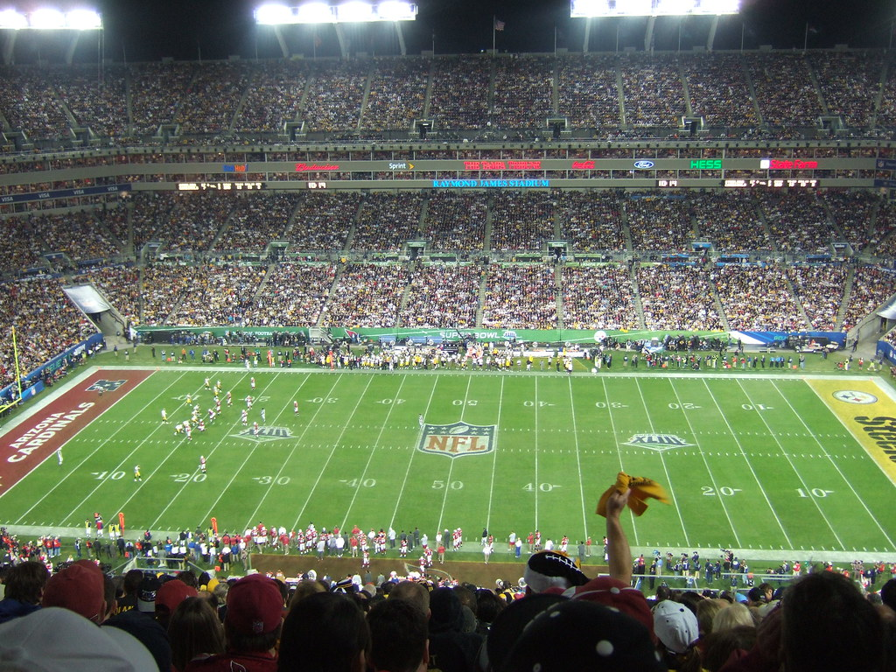
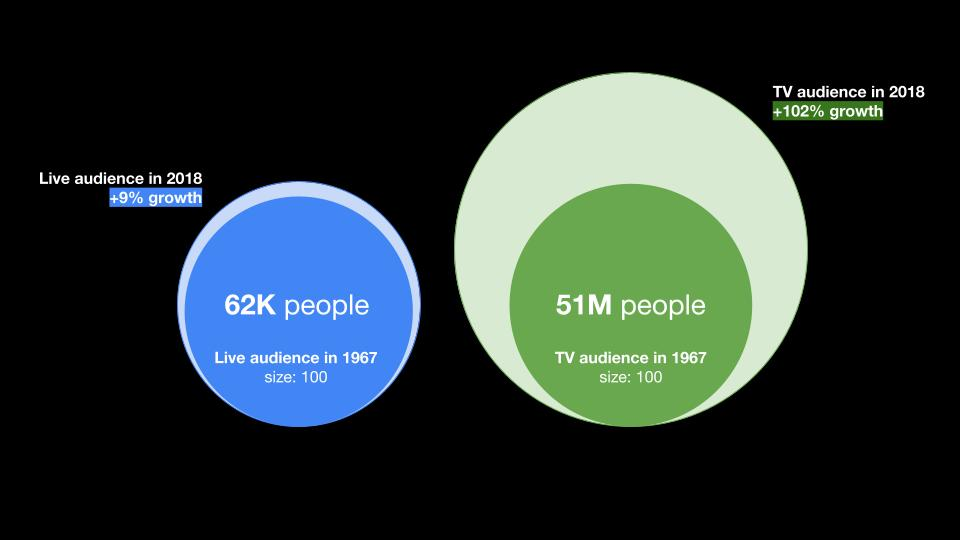

Super Bowl is a one time event of the year when hundreds of millions of people in US sit down to watch sports together. In recent years football became America’s most popular sport and TV ratings prove it. 8 out of the top 10 largest broadcasts in United States are Super Bowl events.
Such high audience reach attracts brands of all kinds driving the costs to $5 million for a 30-second ad spot (according to CBS). It's hard to believe that when it started just 50 years ago things were very different.
In this essay we set to explore the growth of Super Bowl popularity among advertisers and which brands invest the most to become a part of the Biggest event of the year.
The growth of Super Bowl popularity
It all began in 1967 when the very first meeting between teams from the National Football League and the American Football League was held. You would think that an event like this (that never happened before in professional sports) would attract millions of people, but it wasn’t the case with the first Super Bowl. Football wasn’t very popular back then, so the stadium that had a capacity to fit 90K people was only 2/3rds full. And 51M people tuned in to watch it on TV.

Source: flickr
Fifty years later, Super Bowl bears little resemblance to what took place in Los Angeles on Jan. 15, 1967. While almost the same amount of people 67K (+9%) go to see it live, TV audience doubled over the years reaching 103M people in a single day.

Note TV and Live audince sizes are not comparable across
How advertising in Super Bowl changed over the years?
After the first game Super Bowl started to steadily gain popularity. But everything changed in 1998. Number of ads shown in the game doubled and prices jumped up.
Super Bowl growth on TV
As Super Bowl gained popularity TV viewership increased 2 times to 103M viewers.
Growth of ads in the Game
The number of commercials went from 1 in 1967 to 76 in 2018, amounting to a total ad time around 40 minutes.
Ad slot price jump
Ad costs were steadily growing till 1998 - from $2K to $14K in 30 years and then jumped 3.5X to $48K in the next 20 years.
Which brands invested the most in the Game?
329 brands showed ads in Super Bowl game over the last 50 years. Let's explore which industries and brand invetsed in the Game the most.
As Super Bowl popularity continued to grow it started to attract brands from a more diverse set of industries. Over the years the most invested industries were Film & TV shows, Automotive, Alcohol & Food and Online websites.
But majority of advertisers showed up in the Game only once (mainly driven by film industry that predominantly advertised unique movie titles each year). However, 5 brands were able to show up in the game 11+ times: 4 of them are from Food & Beverage categories and a wireless provider T-Mobile.
Among the brands, Chrysler and Coca-Cola have the longest history of presnece in Super Bowl - their first ads appeared in the Game 43 and 39 years ago respectively.
But the most invested brands (measured by total spend on Super Bowl commercial over the years) turned out to be 2 beer brands of Anheuser-Busch company: Budweiser and Bud Light. Followed by PepsiCo with Doritos and Pepsi brands.
Looking ahead
Super Bowl came along way delivering high audience reach to advertisiers. As the media landscape and entertainment contibnue to evolve it would be intersting to see how Super Bowl advertising and aduience would change in the next decade.